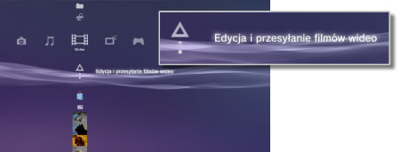
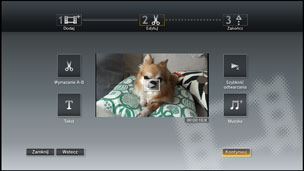

Wideo > Edycja zawartości wideo
Edycja zawartości wideo
Można edytować zawartość wideo zapisaną w systemie PS3™.
1. |
Wybierz kolejno kategorie |
|---|---|
|
 |
|
2. |
Wybierz opcję |
3. |
Wybierz opcję |
4. |
Dokonaj edycji filmu wideo. |
|
 |
|
5. |
Wybierz opcję [Zakończ]. |
 (Wideo) >
(Wideo) >  (Utwórz nowy film wideo).
(Utwórz nowy film wideo). (Edytuj) służy do usuwania określonych scen i dodawania tekstu (lub znaków). Postępuj zgodnie z instrukcjami wyświetlanymi na ekranie, aby dokończyć operację. Aby wyświetlić podgląd edytowanego filmu wideo, wybierz opcję
(Edytuj) służy do usuwania określonych scen i dodawania tekstu (lub znaków). Postępuj zgodnie z instrukcjami wyświetlanymi na ekranie, aby dokończyć operację. Aby wyświetlić podgląd edytowanego filmu wideo, wybierz opcję  .
.Wskazówki
- Wybierając opcję
 (Dodaj) w kroku 3, można dodać kolejne elementy, aby połączyć je w jeden plik wideo.
(Dodaj) w kroku 3, można dodać kolejne elementy, aby połączyć je w jeden plik wideo. - Maksymalny czas odtwarzania edytowanego materiału wideo to jedna godzina.
- Można dodać maksymalnie 16 elementów tekstowych na jednym ekranie oraz 200 elementów tekstowych w jednym edytowanym pliku wideo.
- Jako muzyki tła filmu wideo można użyć tylko wstępnie określonych utworów. Użycie utworów zapisanych w pamięci masowej systemu PS3™ lub na innym nośniku pamięci jest niemożliwe.
Typy plików, które można edytować
Następujące typy plików można edytować w obszarze 
(Edycja i przesyłanie filmów wideo).
- Materiały wideo, które zostały skopiowane do pamięci masowej systemu z nośnika pamięci lub urządzenia pamięci masowej USB (oprogramowanie systemowe w wersji 3.40 lub nowszej).
- Materiały wideo, które zostały pobrane do pamięci masowej systemu w ramach kategorii
 (Przeglądarka internetowa) (oprogramowanie systemowe w wersji 3.40 lub nowszej).
(Przeglądarka internetowa) (oprogramowanie systemowe w wersji 3.40 lub nowszej).
Wskazówki
- Nie można edytować zawartości wideo zapisanej w systemie przez aktualizacją oprogramowania systemu
do wersji 3.40, zawartości wideo chronionej prawami autorskimi i blokadami rodzicielskimi. - Należy uważać, aby nie naruszać własności intelektualnej innych osób.